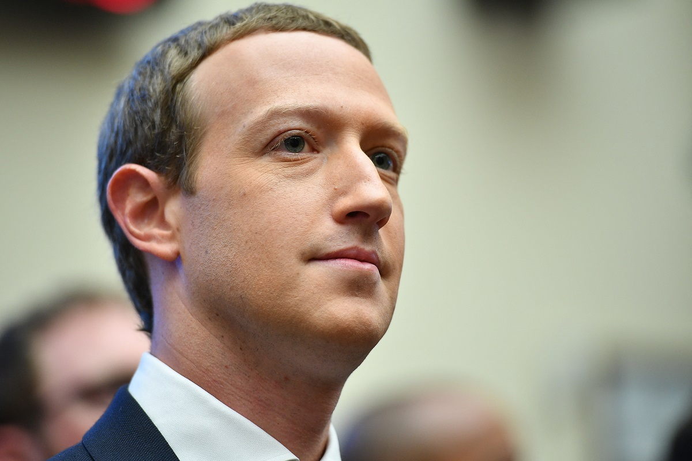
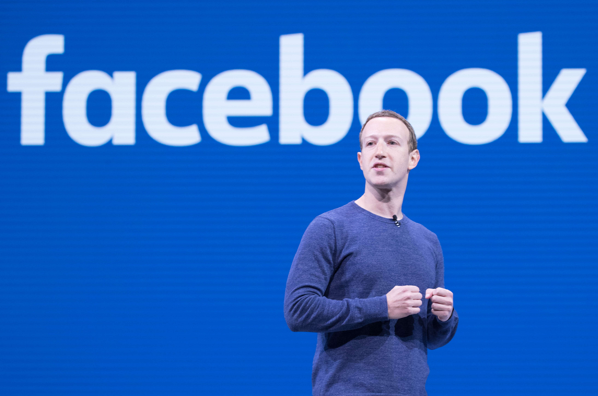

História de vida
O criador do Facebook é Mark Zuckerberg. Nascido em 14 de maio de 1984, em White Plains, Nova York, nos Estados Unidos, Zuckerberg é um empresário e programador de computador conhecido por fundar a plataforma de mídia social Facebook.
Zuckerberg começou a mostrar interesse em computadores e programação desde jovem. Na faculdade, ele desenvolveu várias aplicações e programas. Em 2004, enquanto estudava na Universidade de Harvard, Zuckerberg criou uma plataforma chamada "TheFacebook" para conectar estudantes em sua universidade. O site foi um sucesso imediato e logo se expandiu para outras universidades e instituições de ensino superior nos Estados Unidos.
Em 2005, Zuckerberg deixou a universidade para se concentrar em expandir o Facebook. Ele mudou a rede da empresa para Palo Alto, Califórnia, e recebeu investimentos significativos de empresas de capital de risco. O Facebook continuou a crescer rapidamente e se tornou uma das maiores redes sociais do mundo.
Ao longo dos anos, Zuckerberg liderou a expansão do Facebook, adicionando recursos como a função de compartilhamento de fotos, eventos, grupos e páginas. Em 2012, o Facebook realizou seu IPO (oferta pública inicial), tornando Zuckerberg um dos mais jovens bilionários do mundo.
No entanto, o Facebook também enfrentou controvérsias ao longo dos anos, incluindo preocupações com privacidade e disseminação de desinformação na plataforma. Zuckerberg e o Facebook foram chamados a testemunhar perante o Congresso dos Estados Unidos e outros órgãos reguladores para abordar essas preocupações.
Além do Facebook, Zuckerberg também tem sido ativo em filantropia. Em 2010, ele e sua esposa Priscilla Chan lançaram a Iniciativa Chan Zuckerberg, com o objetivo de promover a igualdade, melhorar a educação e avançar na ciência e saúde. Eles também se comprometeram a doar a maior parte de sua riqueza para causas filantrópicas ao longo de suas vidas.
Mark Zuckerberg é uma figura proeminente no mundo da tecnologia e continua a liderar o Facebook como CEO. Sua visão e empreendedorismo ajudaram a moldar a forma como as pessoas se conectam e compartilham informações online.